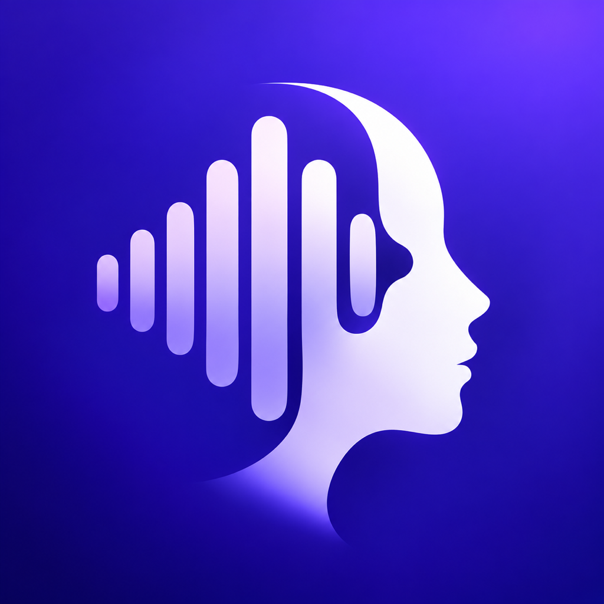

VOICE INSIGHT
공유 리포트내 목소리 분석
A VOICE, A STORY
목소리에 담긴
나만의 음높이.
공유받은 목소리의 분석 요약을 살펴보세요.
분석 결과 링크를 열어 주세요.
앱에서 ‘분석 결과 공유 → 결과 링크 복사’로 만든 전체 링크가 필요합니다.
대표 음높이 · 중앙값
이번 읽기에서 관측한 기본 주파수
주요 음역 · 유성음의 90%
5–95백분위 범위
자주 사용하는 음
A4 = 440 Hz 기준 · 검출된 유성음 프레임의 비율
RESEARCH REFERENCE
기준 논문 보기 ↗연구 참고값과의 거리로, 듣기 좋음의 점수가 아닙니다. 성인 이성 매력도 실험의 결과를 모든 목소리에 적용할 수 없습니다.
발음과 전달력
예문 인식 일치도
음성 인식 결과와 예문의 문자 일치도를 계산한 참고 지표입니다. 전문적인 발음 진단이나 사람이 느끼는 이해도 점수가 아닙니다.